Sportvelden
De bodems van sportvelden worden zwaar belast. Het gewicht van een voetstap geeft meer druk op de zode dan een zware trekker. Er is een overeenkomst tussen het beheer van een weiland en dat van de grasmat van een sportveld.
Inleiding
Sportvelden worden veel belopen en bereden en de kans op bodemverdichting is daarom groot. Bij de aanleg is er de mogelijkheid een goede uitgangssituatie te creëren. Daarna zijn tekortkomingen veel moeilijker te herstellen. De grote fout die veel gemaakt wordt, is veel mest geven, veel beregenen en veel maaien en geen rekening houden met de ondergond. De kwaliteit van het gras gaat achteruit; er wordt opnieuw ingezaaid en een nieuwe periode van achteruitgang kan weer starten.Het is van groot belang om de bodemkwaliteit te volgen middels een kluitbeoordeling tot 20 cm en incidenteel tot 40 cm. Een intensieve en diepe beworteling is de basis voor een goed resultaat. Dit wordt bereikt door te zorgen voor een goede uitgangssituatie en vervolgens een goed beheer. In het volgende worden de onderdelen van een goed bodembeheer geschetst.
Twee voorbeelden:
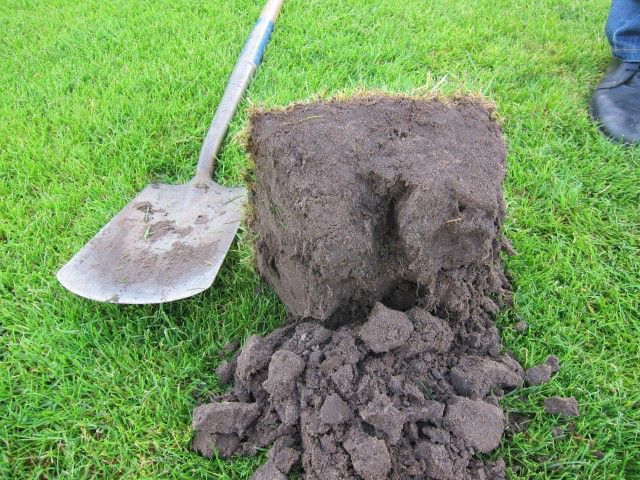
Hockeyveld op zandgrond in Zeist. Op 20 cm diepte een redelijke beworteling. De beworteling gaat door tot ruim 40 cm diepte
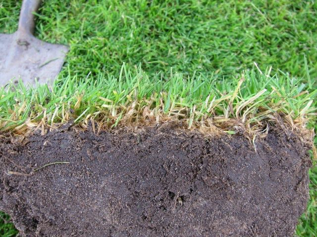
Voetbalveld op zandgrond in Austerlitz. Bovenin een vervilte laag. De beworteling gaat niet veel dieper dan 5 cm. Bij de aanleg is niet voor een goede uitgangssituatie gekozen.
Maatregelen
2.1. Aanleg
Allereerst moet de uitgangsituatie beoordeeld worden middels een kuil. De hoogst toegestane grondwaterstand is 60 cm onder maaiveld in het voorjaar. Tot 60 cm moet de grond ook doorwortelbaar zijn. Dit is te beoordelen op een plaats waar planten staan of aan de hand van aanwezige poriën. De indringingsweerstand meten met een penetrometer is aanvullend een hulpmiddel, maar kan de visuele beoordeling van bodemstructuur of beworteling niet vervangen. Soms is het nodig de ondergrond los te woelen. De laag 0-40 cm moet een organischestofgehalte van tenminste 3% hebben en een deel van deze organische stof moet voedend zijn voor het bodemleven. Bij gebruik van compost is het beter om geen sterk uitgerijpte compost gebruiken. Groencompost is minder geschikt. GFT-compost bevat meer voeding voor het bodemleven.
ZuurgraadBij zandgronden is het optimaal om de pH-KCL of pH-CaCl2 op 5,3 te brengen; bij kalkloze zavel of klei op 6,4. Bij kalkrijke zavel of klei is de streefwaarde 6,8, maar dat is vaak niet haalbaar. pH-verlaging van uitgangsmateriaal met een te hoge pH is op korte termijn niet mogelijk. Dit moet in de loop van tijd door de activiteit van het bodemleven gebeuren.
RegenwormenIndien niet aanwezig is enten van regenwormen wenselijk. Gebruik van Aporrectodea calliginosa heeft de voorkeur. Deze worm veroorzaakt geen uitwerpselen aan het oppervlak. Uitzetten in groepen op 10 m afstand van elkaar. Potwormen kunnen mogelijk de rol van regenwormen overnemen. Hoe deze gestimuleerd kunnen worden is niet bekend. Potwormen kunnen beter tegen een wat verdichte bodem dan regenwormen.
2.2. Onderhoud
StikstofbemestingDe stikstofbemesting is van groot belang. Deze mag niet te hoog en niet te laag zijn: in beide gevallen wordt de wortelgroei geremd. Houd de gift ruim onder de 200 kg N per ha. De stikstofbehoefte is afhankelijk van de levering uit de bodem en het weer en beide zijn niet goed in te schatten. Bepaal daarom de stikstofbemesting vanuit de groei en de ervaring met de grasmat.
FosfaatVaak wordt er teveel fosfaat gegeven. De fosfaat die het gras opneemt, is afkomstig van door het bodemleven vrijgemaakte fosfaat en nauwelijks van fosfaat uit de bemesting. Wanneer de P-Al of P 8N HCL voldoende hoog is, is alleen een lage fosfaatgift van ca 30 kg P2O5 per ha nodig. Van fosfaat wordt vaak gezegd dat het de wortelgroei stimuleert. Dat is niet zo, de wortelgroei wordt juist geremd. Fosfaat verplaatst zich traag door de bodem en wortels moeten naar de fosfaat toegroeien. Bij weinig fosfaat gaan de wortels op zoek en daarom stimuleert weinig fosfaat de beworteling.
MaaienLanger gras geeft een intensievere beworteling. Het gebruik van het gras bepaalt de toegestane lengte. Houd het gras, binnen deze context, zo lang mogelijk, bijvoorbeeld in perioden dat het niet gebruikt wordt.Aanbevolen minimale maailengte:voetbal 35-40 mmhockey 25-30 mmkorfbal 35-40 mmLaat indien mogelijk het gras eens flink langer worden. Dit stimuleert de beworteling. Hierna maak je het geleidelijk aan weer korter. Algemeen geldt dat van de totale graslengte niet meer dan een derde deel mag worden afgemaaid. Teveel in een keer maaien is schadelijk voor de beworteling. Maai gedurende het groeiseizoen twee of drie keer per week. Daarbuiten een keer per week. Vermijd maaien bij een te natte grond.
VegenHet maaisel verhoogt het organischestofgehalte van de bovenlaag en hierdoor kan deze te vet worden. Vegen kan dit voorkomen.Wetra velden (velden met een extra schrale bovenlaag) moeten in de eerste jaren na aanleg worden geveegd. Gewone velden moeten niet worden geveegd tenzij er teveel maaisel aan het oppervlak blijft liggen. Nieuwe velden moeten ook vaak geveegd worden.
Rollen
Rollen is nodig na vorst en na een periode met grote regenwormenactiviteit. Onder normale omstandigheden moet er van november tot maart drie maal gerold worden.
PrikrollenPrikrollen is ongunstig voor de zode; zowel met messen, beitels of holle pijpen. Bij vervetting of spelen onder ongunstige omstandigheden, kan het in bepaalde gevallen wel gunstig werken.
Bezanden
Door bezanden wordt de zode minder gevoelig voor regenrijke omstandigheden. In de winter wordt de toplaag ook stroever. De nazomer en vroege herfst is de beste tijd voor bezanden. Bezanden en uitslepen moet bij voldoende droge omstandigheden gebeuren.
De ideale toplaag heeft de volgende eigenschappen:dikte 15 tot 20 cmM50-cijfer 180-250leemgehalte < 10%organischestofgehalte ca 3%
Het aan te brengen zand moet de volgende samenstelling hebben:M50-cijfer 180-230leemgehalte <5%organischestofgehalte < 1%
DressenVoor dressen moet goede teelaarde gebruikt worden en beslist geen humusarm zand. Het organische stofgehalte moet ca 3% zijn. Vastgelopen gedeelten moeten worden gelicht, beslist niet gekeerd. De doelmond kan met de vertidrain of schudfrees worden behandeld. Kale gedeelten mogen niet worden gefreesd omdat de bodemstructuur dan achteruit gaat.
SlepenBij veel activiteit van regenwormen kan slepen nodig zijn. Het door de wormen opgebrachte zand kan, wanneer de omstandigheden goed droog zijn, met een star sleepraam worden verspreid.
Vertidraineren en schudfrezen
Vertidraineren en schudfrezen kunnen een hulpmiddel zijn om een verdichte structuur op te heffen. Bij combinatie met bezanden kan de waterafvoer verbeterd worden. Door vertidraineren ontstaan er zandpaaltjes waardoor het overtollige water weg kan stromen. Wanneer er geen problemen zijn moet vertidraineren en schudfrezen niet worden toegepast.
Verticuteren
Verticuteren moet alleen worden toegepast wanneer er een vervilte laag aanwezig is. Stel de mesjes af tot 10 mm. In het algemeen is bij weinig bespeelde velden verticuteren eenmaal per jaar nodig en bij normaal bespeelde velden eenmaal per 1 of 2 jaar. Een goede wormenpopulatie zal de noodzakelijke frequentie verlagen.
Wiedeggen
Kleine oneffenheden, bijvoorbeeld ontstaan door wormhoopjes, kunnen met de wiedeg teniet worden gedaan. Wanneer de wiedeg in de hefinrichting van de trekker is gemonteerd, kan de strafheid per situatie optimaal worden gekozen. Een eventueel sliblaagje kan ook met de wiedeg gebroken worden, wat weer voorkomt dat het slib de bovenlaag te glad maakt. Minder gewenste grassen als straatgras en struisgras kunnen ook met de wiedeg verwijderd worden. Bij veel van deze grassen en te straf wiedeggen kan de grasmat te hol worden.
Bodemverzorgende middelen
Er worden vele middelen aangeboden die bacteriën, mycorrhiza’s en dergelijke zouden stimuleren. Dat er in bepaalde gevallen enige werking van uit gaat is niet uitgesloten, maar in het algemeen geeft onderzoek aan dat dergelijke middelen geen zin hebben.
Rassenkeuze
Keuze van diepwortelende rassen als onderdeel van het mengsel is van belang. Rietzwenkgras heeft een diepe beworteling en daarmee een geringere waterbehoefte.
DoozaaienZaai alleen holle, open en kale gedeelten door. Keer of frees de grond daarbij niet, maar licht hem alleen met de hand. De structuur moet in de grond blijven. Gebruik een mengsel van 50% Engels raaigras en 50% veldbeemdgras. Ook 75% Engels raaigras en 25% veldbeemdgras is een mogelijkheid.
BeregenenBergenen heeft drie doelen:
- Een goede groei onderhouden
- Verzorging van de kwaliteit van de grasmat
- Verzorging van de bodemstructuur
De aard van het uitgangsmateriaal van de bodem en de aanwezige bodemstructuur moeten aan de basis van het beregeningsbeleid staan.
Bij te vaak en veel beregenen ontstaat een ondiepe beworteling. Verder krijgen weinig betredingsresistente grassoorten als straatgras en ruwbeemdgras de overhand. Wanneer het beregenen wordt uitgesteld, gaat de plant diepere wortels vormen. Een dieper wortelstelsel is de basis voor een sterke grasmat.
Door met een schop een kluit uit te graven kan periodiek de diepte van de vochtige laag en de diepte van de beworteling worden vastgesteld. Vervolgens moet de bergening er op gericht worden dat de laag van 0-20 cm vochtig is. Vaak is een gift van ca 20 mm hiervoor nodig. Wanneer de toplaag sterk is uitgedroogd, moet eerst een gift van 3-5 mm worden gegeven en na enkele uren de grotere gift. Beregenen aan het einde van de nacht is het beste, omdat dan het verschil in temperatuur van de bodem en van het beregeningswater het minst verschillen.
SpeelduurVoor onderhoud van een goede zode gelden de volgende normen voor maximale speelduur per jaar:
Wedstrijdvelden/trainingsvelden
voetbal 250 uur/400 uurhockey 150 uur/250 uurkorfbal 250 uur/400 uur
verder niet bespelen na:3 mm neerslag gedurende 2 uur/0 uur10 mm neerslag gedurende 12 uur/2 uur
Ten slotte het verhaal van de aanleg van een voetbalveld op zandgrond in Friesland
In onderstaande fotoreeks wordt een overzicht gegeven van alle bewerkingen die worden uitgevoerd bij de herinzaai van een veld. Door een groot aantal malen met zwaar materiaal te rijden en intensieve bewerkingen uit te voeren, verdwijnt de samenhang uit de bodemstructuur. Om hier tegen te kunnen moet in de ondergond een goede bodemstructuur aanwezig zijn die het trillen en de druk van de machines kan verdragen.
Het grote aantal foto’s maakt extra duidelijk wat de bodem en de regenworm allemaal moeten verdragen. Dit maakt mogelijk beter duidelijk dat een goede bodemverzorging vooraf vaak nodig is tot tenminste 40 cm diepte door gebruik van bijvoorbeeld compost. Tevens maakt het duidelijk dat bij iedere bewerking moet worden afgevraagd of deze wel nodig is en of er niet een bodemvriendelijker alternatief is.
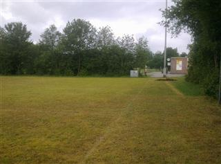
1. De met glyfosaat doodgespoten oude grasmat
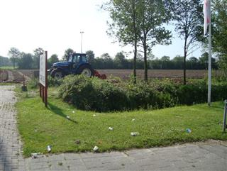
2. Het frezen van de oude grasmat
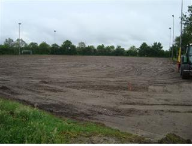
3. Het vlak maken (kilveren) van de grond
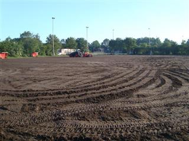
4. En verder kilveren
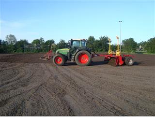
5. En nog meer kilveren
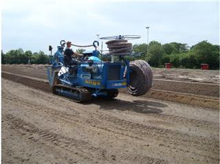
6. Draineren
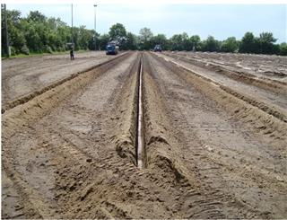
7. De drains liggen
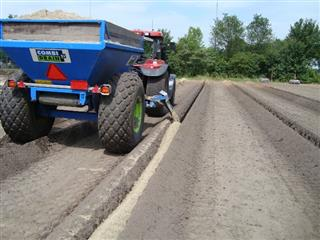
8. Opvullen met grof zand
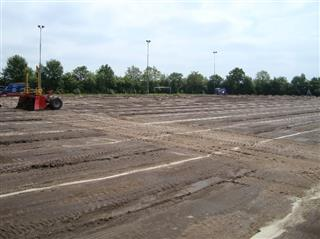
9. Weghalen van de overtollige grond
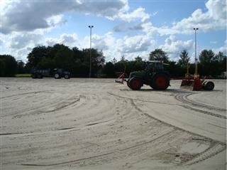
10. Aanbrengen 4 cm verschralingszand
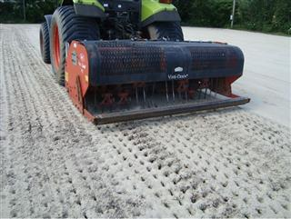
11. De vertidrainmachine maakt gaten waar het zand ingespoeld kan worden
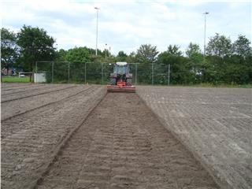
12. Frezen van de bovenlaag
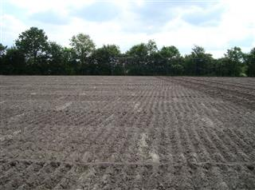
13. Nog een keer dwars frezen
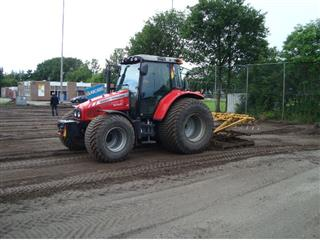
14. Egaliseren
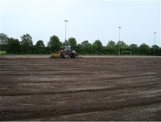
15. Nog een keer dwars egaliseren
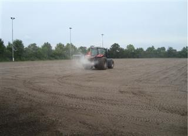
16. Bemesten
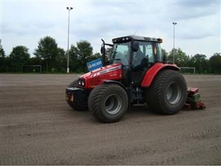
17. Het nieuwe gras wordt ingezaaid op een voorlopig volledig verdichte grond.
Na al deze bewerkingen met vele zware machines is de kans groot dat de bodem volkomen verdicht is en de beworeteling ondiep blijft. Door een kuil te graven is dit te beoordelen. Wanneer het nodig is om opnieuw in te zaaien, kies dan voor een meer bodemvriendelijke methode.
3. Literatuur
Eekeren, N van, E.Heeres en F. Smeding, 2003. Leven onder de graszode. Louis Bolk Instituut Driebergen.Het groene boekje voor sportvelden van SV Wilp.
Postma, J., 2006. Belang van bodemleven bij de aanleg van sportvelden. Branchevereniging Sport en Cultuurtechniek Rijen.